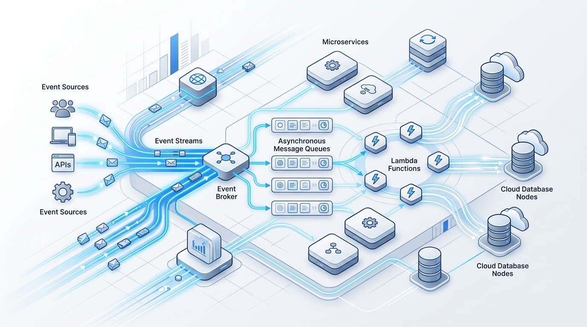

Serverless Implementations
Build lightweight, hyper-scalable applications that run on demand without maintaining static virtual machines or paying for idle compute cycles. We architect decoupled, event-driven pipelines engineered for instant scalability and resilient failover.

Serverless Specializations
Function-as-a-Service (FaaS)
Microsecond execution handlers written in Node.js, Python, or Go deployed to AWS Lambda, Cloud Functions, and Cloudflare Workers.
Event-Driven Message Buses
Asynchronous message routing via EventBridge and Cloud Pub/Sub, guaranteeing loose coupling, schema validation, and dead-letter queue (DLQ) containment.
Serverless Databases & Caching
Scalable key-value and relational persistence using Amazon DynamoDB, Aurora Serverless v2, Firestore, and Upstash Redis.
Distributed Tracing & Observability
End-to-end correlation tracking across asynchronous boundaries using AWS X-Ray, OpenTelemetry, and structured JSON telemetry logs.
Key Engineering Deliverables
- Serverless IaC Templates: Version-controlled Serverless Framework, SST, or AWS SAM templates with isolated staging and production stages.
- API Gateway & Authorizers: Robust OpenAPI specifications, token-based JWT authorizers, rate limiting, and CORS configuration.
- Dead-Letter Queue (DLQ) & Self-Healing: Automated retry policies, alert triggers for unprocessable poison messages, and redrive scripts.
- Cold-Start Optimization Report: Benchmark analysis verifying sub-50ms execution times and optimal memory-to-CPU allocations.